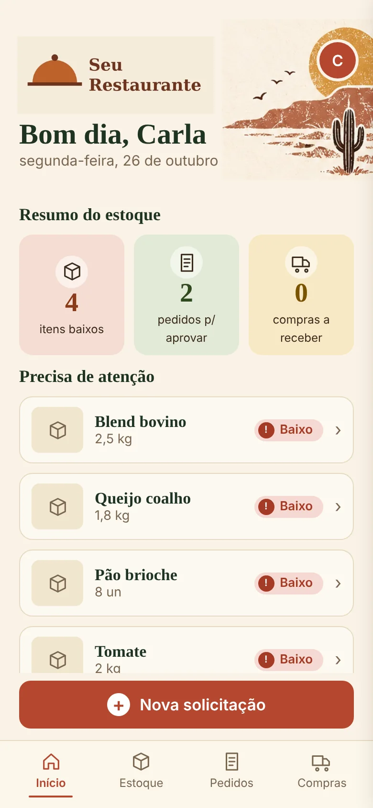
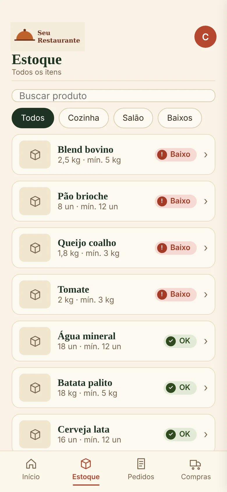
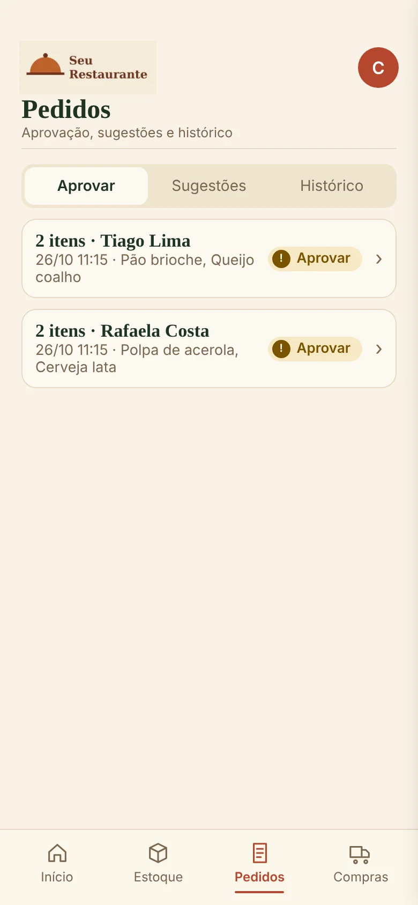
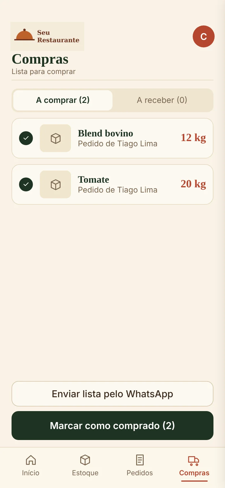
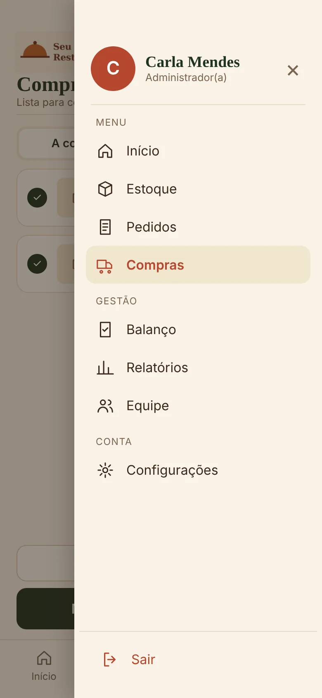
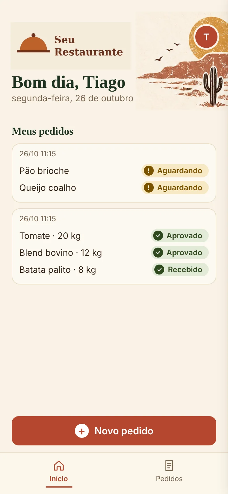
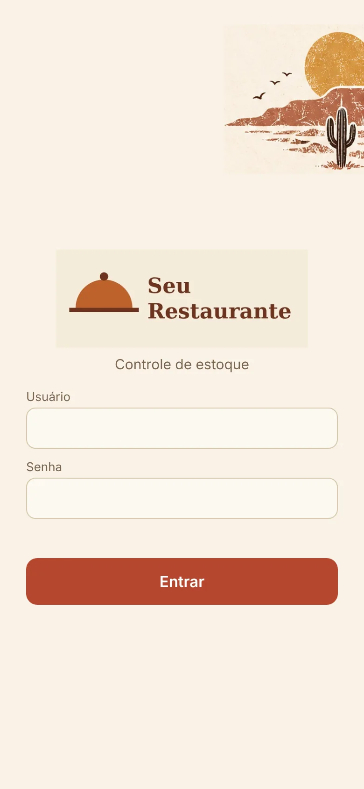

Início
Saudação, resumo com itens baixos, pedidos para aprovar e compras a receber, e a lista do que precisa de atenção.
PWA para food service · v2.1
Estoque e pedidos de compra para restaurante, lanchonete, cafeteria ou açaiteria. A equipe pede o que está faltando, quem administra aprova, compra e confere o que chegou. Nasceu para um restaurante de verdade e está em uso todos os dias.
Sistema de uso interno, sem demonstração pública. Os prints usam um restaurante e uma equipe fictícios.

Como funciona
Cada pedido passa por estas etapas, e toda movimentação fica registrada com quem fez.
Por dentro
Os prints usam o "Seu Restaurante", um nome de exemplo. O visual e o logo se adaptam à casa que usa o app.
Saudação, resumo com itens baixos, pedidos para aprovar e compras a receber, e a lista do que precisa de atenção.

Busca, filtro por setor e selo de status em cada item: baixo, no limite ou OK.

O que a equipe pediu, agrupado por pessoa, com sugestões de itens novos e histórico.

O que foi aprovado vira lista de compras, que pode ir direto para o fornecedor pelo WhatsApp.

Balanço de estoque, relatórios, equipe e configurações ficam só para quem administra.

Quem é da equipe vê só os próprios pedidos e o andamento de cada um.

Cada pessoa tem o próprio usuário. O login bloqueia depois de 5 tentativas erradas.
Por baixo
Nada de "cerveja" e "Cerveja" duplicados: a equipe escolhe da lista, e nomes repetidos são bloqueados.
Cozinha, bebidas e descartáveis contados às cegas, com conferência, recontagem e fechamento.
O estoque soma só o que chegou, e o histórico registra o que faltou.
A administração baixa uma cópia do banco quando quiser.
É um PWA: vira ícone na tela inicial e abre como app.
Roda no plano gratuito do PythonAnywhere, sem custo para o negócio.
Créditos
| Recurso | Para quê | Licença |
|---|---|---|
| Flask | Servidor e API | BSD-3 |
| SQLite | Banco de dados | Domínio público |
| PythonAnywhere | Hospedagem | Termos do PythonAnywhere |
| Google Fonts | Playfair Display, Plus Jakarta Sans, JetBrains Mono | SIL OFL 1.1 |